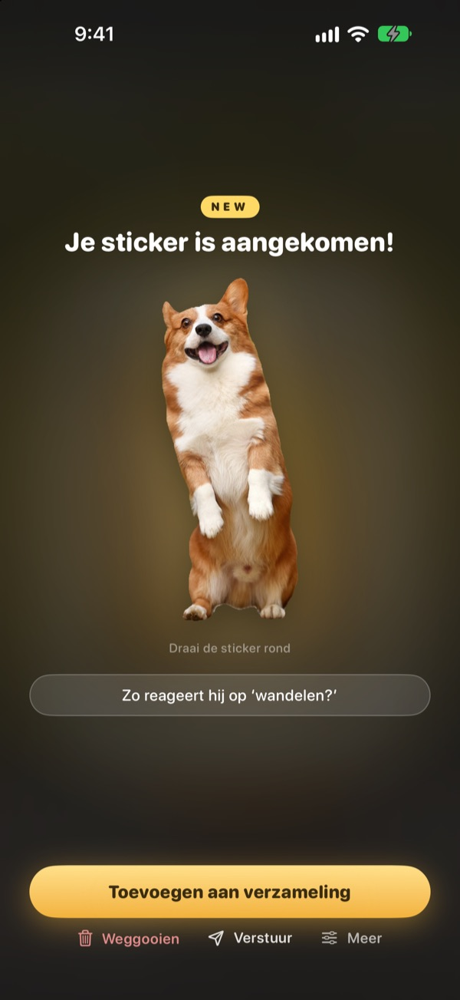
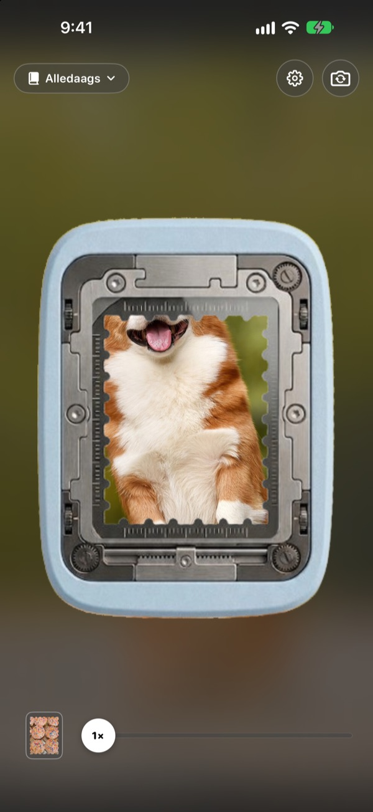
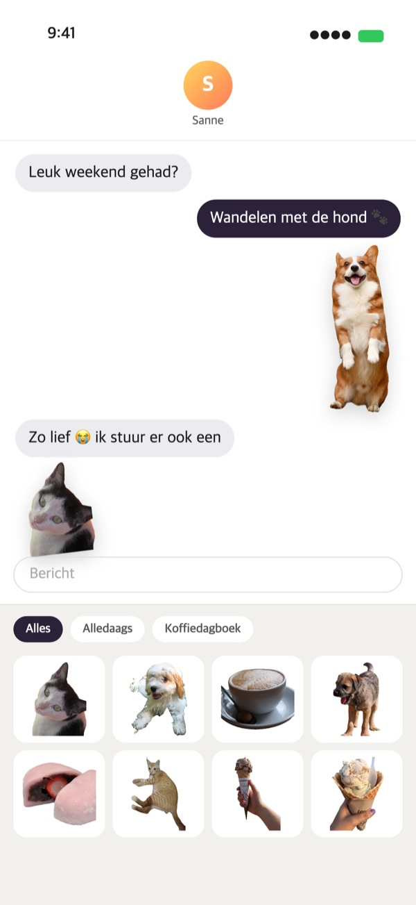
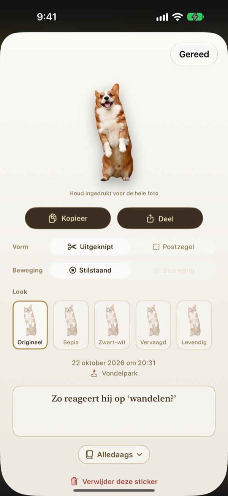

Houd ingedrukt
en het moment is een sticker
Richt de scène in het perforatorvenster, houd ingedrukt en laat los. Je hond wordt precies langs zijn silhouet uitgeknipt, met de korte beweging van vlak voor en na het drukken. Verstuur hem meteen via Berichten of het toetsenbord.
Alle functies zijn gratis. Je stickers en foto’s blijven op je apparaat.

Scheur er zelf een af
Kies een scène, houd de perforatorknop ingedrukt en laat los. Probeer daarna een andere vorm en look.
Schattige momenten dommelen weg in je fotobibliotheek
Je betrapt je hond met zijn tong uit zijn bek. Om er een sticker van te maken, moet je de foto zoeken, uitknippen en nog een sticker-app openen. Tegen die tijd gaat het gesprek allang over iets anders. Punching scheurt de sticker af op de plek waar je de foto maakt, en zodra je hem bewaart, ligt hij in de stickerlade van Berichten.
Onderwerp uitgeknipt, landschap als postzegel
Is er iets om uit te knippen, zoals een persoon, een huisdier of een voorwerp, dan krijg je precies dat. Is er niets, zoals bij een landschap, dan scheurt hij af als postzegel met getande rand.
De korte beweging van vlak voor en na het drukken gaat mee, dus de sticker beweegt.

Meteen in Berichten en op het toetsenbord
Afgescheurde stickers verschijnen in de stickerlade van Berichten. Zet het Punching-toetsenbord aan en je kiest en plakt ze ook in andere apps.
Bewegende stickers komen bewegend aan. Houd een sticker ingedrukt om hem te kopiëren en plak hem waar je wilt.

Vorm en look, ook achteraf
Wissel wanneer je wilt tussen uitgeknipt en postzegel, tussen beweging en stilstaand. De originele foto blijft bewaard, dus alles blijft zo scherp als de eerste keer, hoe vaak je ook wisselt.
Kies een look uit Origineel, Sepia, Zwart-wit, Vervaagd, Levendig en Cyaan, en noteer een paar woorden, de datum en de plek.

Bewaren in verzamelingen, printen op papier
Maak een verzameling per thema, dan kies je ook in Berichten en op het toetsenbord per verzameling. Kies pagina’s als kraft, ruitjes, gelijnd of perkament en zet de stickers in de volgorde die jij wilt.
Maak van een verzameling een pdf om te printen, met snijlijnen in postzegelvorm, en print hem direct op stickerpapier.

In drie stappen aan de slag
- 1
Richten
Zet wat je wilt bewaren in het venster midden in de camera.
- 2
Ingedrukt houden, loslaten
Zodra je loslaat, scheurt de sticker af.
- 3
Bewaren en versturen
Voeg hem toe aan een verzameling en hij staat meteen klaar in Berichten en op het toetsenbord.
Waar je het gebruikt, waar je het instelt
- Berichten
- ＋ naast het tekstveld ▸ Stickers ▸ Punching Stickers
- Andere apps
- Zet het Punching-toetsenbord aan, wissel ernaar met de wereldbol-toets, kies en plak
- Overal
- Houd een sticker ingedrukt om te kopiëren en plak hem
- Papieren stickers
- ⋯ in een verzameling ▸ Gebruiken ▸ Stickervel om te printen (pdf)
- Pagina’s en volgorde
- ⋯ in een verzameling ▸ Vrij versieren
- Oudere foto’s
- Importeren uit Foto’s, in een verzameling
- Vorm bij afscheuren
- Instellingen ▸ Afscheuren ▸ Standaardvorm
- Beweging bekijken
- Instellingen ▸ Weergave ▸ Beweging automatisch afspelen
- Snel openen
- Punching-camera openen via Opdrachten of het bedieningspaneel
Instellingen vind je onder het tandwiel rechtsboven in de camera.
Veelgestelde vragen
Mijn sticker beweegt niet.
Controleer rechtsboven in de camera onder Instellingen ▸ Weergave of Beweging automatisch afspelen aan staat. Tik daarna op de sticker en kijk of Beweging onder Vorm aan staat. De beweging wordt altijd vastgelegd, dus je kunt hem op elk moment aanzetten. Foto’s die je uit de Foto’s-app importeert, zijn één beeld en bewegen daarom niet.
Ik krijg een postzegel in plaats van een uitgeknipte sticker.
Scènes zonder iets om uit te knippen, zoals een landschap, worden automatisch als postzegel afgescheurd. Tik op de sticker om dat onder Vorm op elk moment te wijzigen. Wil je vanaf het begin postzegels, wijzig dan Instellingen ▸ Afscheuren ▸ Standaardvorm.
Ik zie mijn stickers niet in Berichten.
Tik in Berichten op de knop ＋ naast het tekstveld ▸ Stickers en zoek Punching Stickers. Ze verschijnen zodra je in Punching minstens één sticker hebt afgescheurd, en heb je meer dan één verzameling, dan blader je per verzameling. Een uitleg stap voor stap staat onder Instellingen ▸ Gebruiken ▸ Gebruiken in Berichten en toetsenbord.
Hoe zet ik het toetsenbord aan?
Tik onder Instellingen ▸ Gebruiken ▸ Gebruiken in Berichten en toetsenbord op Open Instellingen en zet Toetsenborden ▸ Punching Stickers aan. Voor het plakken van stickers is ‘Sta volledige toegang toe’ nodig, maar het toetsenbord leest of verstuurt nooit wat je typt en maakt nooit verbinding met internet. Tik daarna in een willekeurige app op de wereldbol-toets om naar Punching Stickers over te schakelen.
Kan ik echte stickers printen?
Tik rechtsboven in een verzameling op ⋯ ▸ Gebruiken ▸ Stickervel om te printen (pdf). Je krijgt een printklare pdf van 300 dpi van de hele verzameling, met snijlijnen in postzegelvorm, klaar voor stickerpapier in je eigen printer of bij een drukkerij. De Printgids in hetzelfde menu helpt je stap voor stap.
Waar zijn mijn eerdere collecties gebleven?
Sinds versie 1.0.1 worden stickers nog maar op één manier gegroepeerd: in verzamelingen. Elke collectie is een verzameling met dezelfde naam geworden, met stickers, pagina’s en volgorde precies zoals ze waren.
Er brandt een groen lampje in de statusbalk.
Dat is het cameralampje van iOS. Het brandt alleen zolang het camerascherm open is. Open je een verzameling, dan stopt de camera en gaat het lampje uit.
Wat gebeurt er als ik een sticker verwijder?
De sticker, de originele foto en de bewegingsgegevens worden definitief van je apparaat verwijderd en verdwijnen ook uit de stickerlade van Berichten. Herstellen kan niet, dus denk goed na voor je iets verwijdert.
Waar worden mijn foto’s en stickers bewaard?
Alleen op je apparaat. Er is geen account, geen eigen server en geen reclame. Het enige wat je apparaat verlaat, zijn anonieme gebruiksstatistieken, foutrapporten en feedback die je zelf stuurt. Meer daarover lees je in het privacybeleid.
Is het echt gratis?
Ja, alle functies zijn gratis. Vind je de app leuk, dan kun je de ontwikkelaar in de app een fooi geven, maar een fooi ontgrendelt niets.
Vragen of feedback? Mail naar leeo@kakao.com. We antwoorden meestal binnen 2 tot 3 dagen. Bugmeldingen en functievoorstellen ontvangen we ook via GitHub (M1zz/StampCamera).